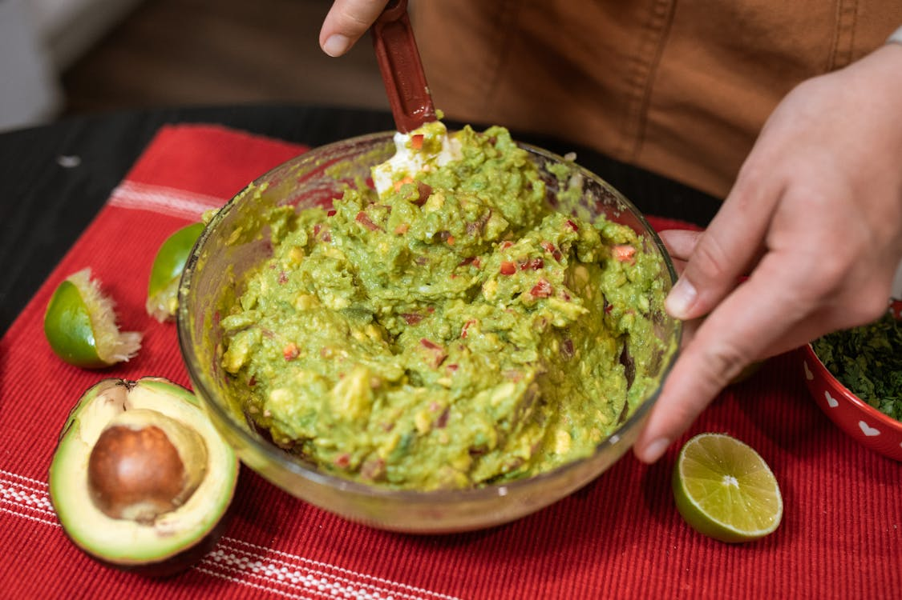

Guacamole

Ingredients
- 3 avocado's - peeled, pitted and mashed
- 1 lime, juiced
- 1 teaspoon salt or to taste
- 2 roma (plum) tomatoes, diced
- 1/2 cup diced onions
- 3 tablespoons chopped fresh cilantro
- 1 teaspoon minced garlic
- 1 pinch ground cayenne pepper
Cooking instructions
- Gather all ingredients
-
Mash avocados, lime juice, and salt together in a medium bowl; mix in tomatoes, onion,
cilantro, and garlic.
-
Stir in cayenne pepper. Serve immediately, or cover and refrigerate for 1 hour for improved
flavor.
Home